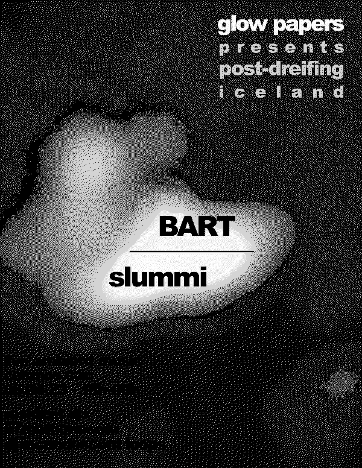
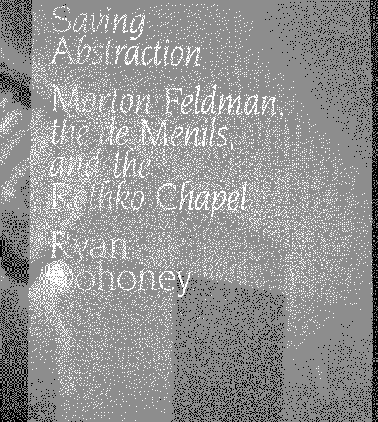

230329
My interview with Straumur is now available in transcript form on RÚV, the main news outlet of Icelandic National Radio. Although the interview is in Icelandic, it can be translated using Google Translate.
For those who are interested, you can read the interview in its entirety here

Recently, I've been dealing with the aftermath of an infection, making it a bit of a challenge to get back into my daily routine. However, I'm excited about some upcoming events that I've been preparing for (while being careful not to overexert myself).
The main event is an upcoming gig in Portugal at Damas and Quantica. Additionally, I will be doing a guest mix for Sub Tempo on Quantica Radio, which I am very excited about. It's been a while since I've played a solo show like this, and I'm preparing all-new material for it. This has led me to spend a lot of time writing music in Ableton, which has been a rare luxury for me during the busiest weeks of school.
I will soon post some new music and mixes, but I'm also hoping to finish some new ambient work next month. My plan is to create case studies based on specific creative concepts and practices, approaching them like exams. These studies will likely be an offshoot of the Pollur series, and the first one will revolve around simple audio editors and field recordings.

While I was sick, I had the opportunity to watch some films and read some books, which I haven't been able to do for the past couple of months. The most notable of these were:
Floating Weeds by Yasujirō Ozu. This movie really caught me off guard, as I wasn't expecting to like it as much as I did. It's an incredibly beautiful film with very dislikeable characters, in the best possible way.
Baron Wenckheim's Homecoming by László Krasznahorkai, which continues to be my favorite stylist in literature. There is just something about the way he writes that satisfies an itch for me like no other author is capable of.
Saving Abstraction: Morton Feldman, the de Menils, and the Rothko Chapel by Ryan Dohoney. This one was quite moving and insightful about the connections between the art world and its private patrons. There is also something about Mark Rothko's suicide and its aftermath that makes me profoundly melancholic every time I think about it.
I also continued reading Berserk by Kentaro Miura. I had to put this one down when I was reading it last year because it's so violent and stunning at the same time, reading too much of it can be overwhelming. I would say I'm around two-thirds of the way through the whole series, and it's probably one of the best serialized narratives I've ever read, manga or otherwise.